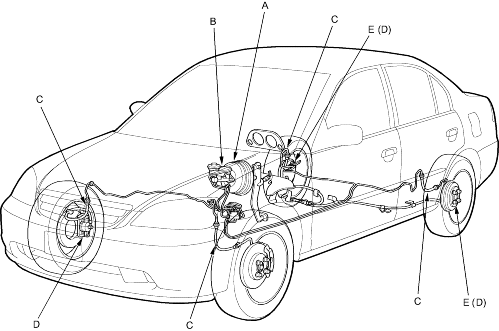

Conventional Brake Components
|
19-4 |
Check all of the following items:
| Component | Procedure |
| Brake Booster (A) | Check brake operation by applying the brakes during a test drive. If the brakes do not work properly, check the brake booster. Replace the brake booster as an assembly if it does not work properly or if there are signs of leakage. |
| Piston Cup and Pressure Cup Inspection (B) |
|
| Brake Hoses (C) | Look for damage or signs of fluid leakage. Replace the brake hose with a new one if it is damaged or leaking |
| Calliper Piston Seal and Piston Boots (D) | Check brake operation by applying the brakes.
Look for damage or signs of fluid leakage. If the pedal does not work properly, the brakes drag, or there is damage or signs of fluid leakage, disassemble and inspect the brake calliper. Replace the boots and seals with new ones whenever the brake calliper is disassembled. |
| Wheel Cylinder Piston Cup and Dust Cover (E) | Check brake operation by applying the brakes.
Look for damage or signs of fluid leakage. Disassemble and inspect the wheel cylinder if the pedal does not work properly, the brakes drag, or there is damage or signs of fluid leakage. Replace the piston cups and dust covers with new ones whenever the wheel cylinder is disassembled. |
NOTE: LHD type is shown, RHD type is symmetrical.
